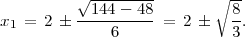

where A is an p×n matrix, b IRp, and f and each gi are smooth functions from IRn to IR. Assume is a feasible solution. Assume there exists a direction with A= 0 and ∇gi()T < 0 for all the active constraints I at . Show the constraint qualification T = G′∩ H0 holds at , where T is the cone of tangents at , G′ = {d IRn : ∇gi()T d ≤ 0∀i I}, and H0 = {d IRn : ∇hj()T d = 0 for j = 1,…,p}.
Solution:
We always have T ⊆ G′∩ H0, so we need to show the converse.
Let d G′∩ H0, d≠0. Define
Note that
so there exist positive step lengths αk and feasible points xk with
Thus, by definition,
as required.
Solution:
We show that the conditions of Question 1 hold, so the result follows. For any feasible point , define
Since A = A = b, we have A= 0. In addition, for each active constraint i we have gi() = 0, so the subgradient inequality gives
Hence the conditions of Question 1 are satisfied by the direction .
Does it satisfy the second order necessary conditions? What about the second order sufficient conditions? Find all other KKT points and check the second order necessary and sufficient conditions for those points. Find the globally optimal solution (justify your answer). (Note: You should find that one of the KKT points is irrational.)
Solution:
Let the three linear constraints be denoted by g1(x), g2(x), and g3(x). We have
and
for any choice of u, since all the constraints are linear.
The point satisfies g1() = g2() = 0 with g3() < 0. So for this point to be a KKT point, we need to be able to find nonnegative multipliers u1 and u2 with
Any such d has dT ∇xx2d = 0, so the second order sufficient conditions are not satisfied. The objective function value of is -2.
The KKT conditions can be expressed

Divide into cases based on the complementarities:
- Assume u1 = 0: From (4), we must have u2 > 0, so x1 + x2 = 3.
- If u3 > 0 then x2 = 3 so x1 = 0. It follows from (3) that u2 = 6 and then u3 = 4. This is a KKT point. Since both u2 and u3 are positive, only the zero direction satisfies dT ∇gi(x) = 0 for all active i with ui > 0. It follows that both the second order necessary and the second order sufficient conditions are satisfied. The value of this point is 6.
- If u3 = 0 then u2 = 2 and so, from (3), 3x12 - 12x1 + 6 - 2 = 0, so we get
 Taking the positive square root leads to a violation of (9), so the only possibility is the negative root. This leads to a KKT point:
The Hessian ∇xx2L is indefinite at this point. Allowable directions include d = (1,-1)T , which satisfies dT ∇xx2Ld < 0. So neither the SONC nor the SOSC hold at this point. The value of this point is also larger than 7, so it’s not a global minimizer.
- Assume u1 > 0: Must have 3x1 -x2 = 5. We’ve already considered the point , so we need only consider points with x1 + x2 > 3 and hence with u2 = 0.
Constraint Qualification holds throughout the feasible region, since the constraints are linear. The feasible region is compact. Therefore, a global minimizer exists and must be a KKT point. The best of the three KKT points is , so this is the global optimal solution.
|
| (12) |
has Lagrangian dual function
|
| (13) |
and Lagrangian dual problem
|
| (14) |
- (5 points) Show that problem (13) has an unbounded optimal value if 0 ≤ u ≤ 1.
- (10 points) Find the optimal dual solution to (14).
- (10 points) Find the optimal primal solution to (12). Does the problem have a duality gap?
Solution:
- Assume 0 ≤ u ≤ 1. Then with the choice x2 = 0, x1 →-∞.
- Assume u > 1. We have So the dual problem is:
For θ > 1, we have
so θ(u) is maximized at the larger root of the quadratic in the numerator, namely u = 1.5, which is in the feasible range, so the optimal dual value is -9.
- The primal feasible region is compact and the objective function is continuous, so a global
minimizer exists. If the constraint is active then its gradient is nonzero, so the gradients of the
active constraints are linearly independent at any feasible point. So we can find a
global minimizer by finding all KKT points and choosing the best. KKT conditions:
Break into cases:
- u = 0: From (15) and (16), we have x = (1,0), which has value 0. This is a KKT point.
- u > 0: From (16), we have u = 0.25 or x2 = 0.
Thus, we have 3 KKT points. The best of these has value -9, which is also the dual value, so this point x = (-2,0) is optimal.